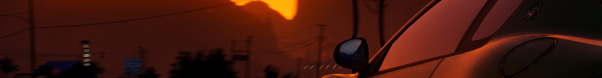

↬ 1 Allgemeines
1. Klaut den anderen keine Welle beim surfen !
2. Seaside Roleplay ist ein Semi-Hardcore RP Server, also verhaltet euch auch dem entsprechend.
3. Verhaltet euch so, dass ihr und andere Spaß am Roleplay auf Seaside habt.
4. Eigenwerbung ist untersagt und wird mit einem Community Ausschluss bestraft.
5. Das aktuelle Mindestalter liegt bei 15 Jahren, jedoch können Ausnahmen bei geistiger Reife gemacht
werden.
6. Grauzonen im Regelwerk dürfen nicht ausgenutzt werden
7. Entbannungs Anträge sind erst nach 3 Tagen möglich und kann nur von dem supportenden Teamler entbannt
werden
(oder einem High-Teamler).
8. Beleidigende, nationalsozialistische, diskriminierende und rassistische Aüßerungen, genau sowie sexuelle
Belästigungen sind untersagt !
9. Als Kommunikationsmittel darf nur Ingame Voice benutzt werden.
10. Jeder Spieler sollte sein Spielgeschehen via OBS, Medal, etc. aufzeichen, da dies in einer
Supportsituation
hilfreich ist.
11. Der Community Manager und das Sicherheitsteam darf Spielern eine Aufnahmepflicht erteilen. Dieser
Spieler
muss bei jeglichem Schussgefecht eine Aufnahme anfertigen.
↬ 2 Support
1. Während einer aktiven Situation ist es dem Spieler untersagt in den Support zu gehen, diese ist nicht mit
der Bewusstlosigkeit beendet.
2. Beschwerden müssen nach spätestens 48 Stunden eingereicht werden, danach sind sie ungültig.
3. Bei Beschwerden muss ein Videobeweis vorliegen.
4. Beschwerden dürfen nur von Spielern eingereicht werden, die auch in der RP-Situation beteiligt waren.
Ausnahmen gibt es,
wenn es sich um eine ganze Fraktion handelt, dann darf er Leiter der Fraktion
hinzugezogen werden.
5. Handelt es sich um eine Fehlentscheidung des Teammitglieds, muss ein Team Beschwerde Ticket im Discord
geöffnet werden.
6. Beleidigen im Support ist strengsten verboten und wird bestraft.
7. Ein Support darf ohne Erlaubnis nicht aufgezeichnet werden.
↬ 3 Charaktererstellung
1. Der IC-Name darf keine Beleidigung oder Diskriminierung enthalten !
2. Es darf kein Name einer bekannten Person/Charakter genommen werden.
3. Die Größe des Charakters muss realistisch sein.
↬ 4 Realismus
1. Unfälle müssen ausgespielt werden und je nach härte muss ein Mediziner gerufen/hinzugezogen werden.
2. Nach einem höheren Sturz muss man den Schmerz ausspielen
3. Ein überschlagenes Auto kann nicht weiter befahren werden und muss repariert werden.
4. Mit einem Sportwagen kann man nicht Offroad fahren und nur langsam auf einen Feldwegen.
5. Nach einem Taser Schuss ist man für 10 Sekunden Bewegungsunfähig.
6. Es dürfen keine Gegenstände die nicht im Spiel sind erfunden werden.
7. Es ist erlaubt sich als Staatsbeamter auszugeben.
↬ 5 Roleplay
1. Dein Leben ist das höchste Gut, also musst es um jeden Preis schützen.
2. Das grundlose Töten oder Verletzen von Personen ohne RP Hintergrund ist verboten (Random
Deathmatch/RDM)
3. Absichtliches überfahren von anderen Spielern, um sie außer Gefecht zu setzen ist verboten (Vehicle
Deatchmatch/VDM)
4. Das Verwenden oder Weitergeben von Informationen, die dein Charakter im Spiel nicht gelernt hat (aus
Twitch-Chats und Discord-Channeln),
um sie im Roleplay zu verwenden ist verboten. Das Verwenden von
Informationen aus Streams oder Chats,
um große Spekulation Sprünge zu machen und am Ende zu "wissen",
wie
die Dinge funktionieren ist ebenfalls verboten Meta-Gaming)
5. Das Nutzen von Informationen aus dem Livechat als Streamer ist ebenfalls untersagt (Backseat-Gaming)
6. OOC vorher geplantes RP ist nicht gestattet! (RP-Situationen/-Stränge vorher mit anderen beteiligten
Parteien außerhalb des Spiels absprechen).
Dies ist natürlich untersagt.
7. Das verlassen einer Rp Situation durch betreten eines Objekts, was für andere nicht möglich ist. Auch
dazu
zählt das ausloggen in einer Situation.
Dies ist natürlich untersagt.
8. Fail RP, heißt das realitätsfremde Reagieren auf eine RP Situation und ist natürlich strengstens
untersagt.
9. Wenn eine Situation durch einen Neustart oder Crash des Servers unterbrochen wird, haben sich alle
Beteiligten wieder in die Situation einzufinden.
Sobald alle wieder da sind wird die Situation normal
weitergeführt.
10. Sollte ein Bug gefunden werden, wird dieser nach der Situation im Support oder im Bug-Report Channel auf
dem
Discord gemeldet.
11. Sollte man durch einen Bug sterben, wird die Situation trotzdem ausgespielt und anschließend gemeldet
!
12. Das aktive suchen nach Bugs ist verboten und wird bestraft !
13. Power Rp bedeutet, bei Handlungen demgegenüber keine wirkliche Handlungsmöglichkeit zu geben. Dies ist
natürlich untersagt.
Es sollte immer der anderen Partei eine Möglichkeit zu überleben geboten
werden.
14. Als Drittpartei bezeichnet man das Einmischen in eine Situation, die dich nichts angeht bzw. deinen
RP-Strang nicht betrifft.
15. Drittpartei ist mit einem RP Hintergrund erlaubt.
16. Es ist verboten absichtlich Gastanks oder Tankstellen zum explodieren zu bringen. Sollte dies uns
auffallen
wird es bestraft.
17. Es gibt keine Schussankündigung, dennoch muss der Gegenpartei die Chance zu überleben gelassen werden.
Dies
fällt weg, wenn es einen triftigen RP Hintergrund gibt.
18. Das Benutzen von Selbsthilfekits während einer aktiven Schießerei zum permanenten heilen ist
verboten.
19. Unter Combat Logging versteht man das leaven des Servers während eines Kampfes oder das ausloggen, um
einer
Situation zu entkommen
20. OOC umfasst alle Informationen, Begriffe und Handlungen von außerhalb. Mit dieser Begrifflichkeit wird
jede
Information oder Handlung,
welche nicht im Spiel und somit auch nicht im Roleplay passiert, beschrieben.
Dies ist natürlich verboten und wird bestraft.
↬ 6 Newlife
1. Sollte man ausbluten, vergisst man das Geschehen der letzten Situation und darf nicht mehr an dieser
teilnehmen.
2. Wird man von einem Mediziner wiederbelebt, ist man für 10 Minuten kampfunfähig. Man behält aber sein
Wissen.
↬ 7 Krieg
1. Ein Krieg kann bei der Fraktionsleitung mit sinnvollem RP Hintergrund beantragt werden.
2. Dieser darf nicht in der nähe von Bürgern abgehalten werden, da diese nicht verletzt werden sollen.
3. Ein Krieg dauert 24 Stunden an.
↬ 8 Fraktionen
1. Bei einer Fraktions Eröffnung muss ein Konzept vorliegen, dieses muss von der Fraktionsleitung abgesegnet
werden.
2. Eine illegale Fraktion kann maximal aus 20 Mann bestehen, für legale Fraktionen gibt es kein Limit.
3. Die Stürmung einer anderen Fraktion muss von der Fraktionsleitung bestätigt werden.
4. Zwei Familien mit dem selben Ziel können bei der Fraktionsleitung ein Bündnis beantragen.
5. Eine kleine Fraktion darf maximal aus 6 Mann bestehen. Diese können ein Bündnis mit einer anderen
Fraktion
beantragen.
6. Sobald man mit der Fraktion agiert muss die Fraktionskleidung
7. Um einer illegalen Fraktion beizutreten ist ein Blood In erforderlich. Beim austritt, entscheidet die
Familie, ob ein Blood Out notwendig ist.
Man kann sich auch dem Blood Out entziehen. Nach dem verlassen
einer illegale Fraktion muss man 1 Tage warten bis man in eine neue Fraktion wechseln kann,
dies gilt
nicht
von illegal zu legal.
↬ 9 Zivilisten
1. Zivilisten werden ohne RP Hintergrund in Ruhe gelassen.
2. Sollten diese jedoch provozieren verfällt (1).
3. Zivilisten können maximal zu 5 agieren und müssen einheitliche Kleidung tragen.
↬ 10 Medical Department
1. Medics sind unantastbar. Außerdem ist es verboten MD Gegenstände zu besitzen, wenn man kein Medic
ist.
Mit
einem sehr guten RP Hintergrund darf der Medic als Geisel genommen werden.
2. Diese Regel gilt nicht, wenn der Medic provoziert.
3. Der Medic hat immer das Recht zu entscheiden ob eine Person mit ins Krankenhaus muss oder nicht.
4. Der Medic darf entscheiden, wie lange eine Behandlung geht.
5. Waffen im MD zu tragen ist verboten, sollte ein Spieler mit ins Krankenhaus müssen darf die andere Partei
diese abnehmen.
6. Der Mediziner darf keine Personen während einer aktiven Schießerei Personen wiederbeleben.
7. MD Fahrzeuge dürfen nur mit nachvollziehbaren RP Hintergrund gestohlen werden.
↬ 11 Police Department
1. Das LSPD darf sämtliche illegale Gegenstände abnehmen.
2. Das Police Department darf jede Person verhaften, wenn sie eine Gefahr für die Strandbewohner
darstellt.
3. LSPD Beamte dürfen nicht ohne sinnvollen RP Hintergrund hochgenommen werden.
4. Das LSPD hat das Recht einem Gefangen mit ins MD zu folgen und ihm davor die Waffen abzunehmen.
5. Das LSPD ist nicht von der Drittpartei betroffen und darf sich in jede Situation nach eigenem
Ermessen.
6. Dem LSPD dürfen keine Langwaffen abgenommen werden, der Rest ist erlaubt.
↬ 12 Geiselnahme
1. Für eine Geiselnahme wird ein RP Hintergrund benötigt.
2. Medics dürfen nicht als Geisel genommen werden.
3. Gibt es jedoch eine Notsituation zählt (2) nicht.
4. Es ist verboten Geiseln frei zu erfinden, jedoch dürfen sich Täter als Geiseln ausgeben.
5. Eine Geisel darf max. 1 Stunde gehalten werden sollte dann mit ihr nichts gemacht werden muss sie wieder
frei gelassen werden.
↬ 13 Überfälle
1. Sollte es bei einem Überfall Geiseln geben, muss das LSPD darüber informiert werden.
2. Blitzräube sind erlaubt, heißt wenn man schnell ist kann man ohne PD Kontakt flüchten.
3. Nach einem Raub jeglicher Art sollte man sich eine gewisse Zeit verstecken. Es ist verboten direkt den
nächsten Ladenraub zu starten.
4. Komplizen die sich als Geiseln ausgeben sind erlaubt.
5. Eigene Läden dürfen nicht überfallen werden.
6. Es dürfen die Verhandlungsführer des LSPD als Geisel genommen werden, jedoch ist damit zu rechen das dass
LSPD Darauf mit Gewalt antwortet.
7. Geiseln müssen freigelassen werden, sobald das LSPD das Lösegeld bezahlt hat.
↬ 14 Maskierung
1. Trotz Vollmaskierung kann man an seiner Stimme erkannt werden.
2. Ein Stimmverzerrer ist mit RP Hintergrund erlaubt, dafür ist aber das tragen einer Maske notwendig.
↬ 15 Sperrzonen
1. Sperrzonen sind die Army Base, das Gefängnis und von dem LSPD ausgerufene Sperrzonen (rote markierte
Bereiche auf der Map)
2. In Sperrzonen darf sofort das Feuer auf einen eröffnet werden.
↬ 16 Safezones
1. Nikki Beach ist die einzige Safezone.
2. Flüchtet man jedoch auf diese, gilt (1) nicht mehr. Das heißt dort darf gegeneinander geschossen werden,
jedoch sollte dabei kein Unbeteiligter verletzt werden.
↬ 17 Korruption
1. LSPD beamten ist die Korruption erlaubt, jedoch darf mit Waffen Verkäufen die Wirtschaft nicht zu stark
geschädigt werden.
2. LSMD Beamten ist die Korruption strengstens verboten.
3. Führungsebene der jeweiligen Staatsfraktionen dürfen keine Korruption begehen.
↬ 18 Millionenstadt-Prinzip
1. In Los Santos und seiner Umgebung leben mehrere Million Menschen, deshalb sollten illegale Aktivitäten an
abgelegenen Orten durchgeführt werden.
2. Das heißt Geiselnahmen sollten nicht in der innenStadt durchgeführt werden, sondern außerhalb von Los
Santos
oder an abgelegenen Orten.
3. Sollte es jedoch an belebten Orten durchgeführt werden, ist eine Vermummung notwendig, außerdem muss das
Verbrechen schnell begangen werden.
↬ 19 Blacklisted-Words
1. Alle Wörter mit denen auf Clips hinwiesen wird, z.B. Bodycam, Drittes Auge, Eule...
2. Alle Wörter die auf das Regelwerk hindeuten, z.B. Bibel, Gesetzbuch...
3. Alle Wörter mit denen auf Admins hingewiesen wird, z.B. Götter, Engel...
4. Alle Wörter die nichts mit RP zu tun haben, z.B. Server, Restart...
5. Sämtliche OOC Begriffe, z.B. Roleplay, Discord, Teamspeak, Mute, Support...
6. Außerdem sind alle Gambobegriffe verboten, z.B. Aim, Headshot, Settings...
7. Für das PD ist es erlaubt, das Wort Bodycam zu benutzen. Da es das PD Roleplay fördert.
↬ 20NPCs
1. NPCs dürfen nicht angeschossen werden.
2. NPCs Autos dürfen nicht mit Absicht gerammt werden.

 Camorra City | Regelwerk
Camorra City | Regelwerk